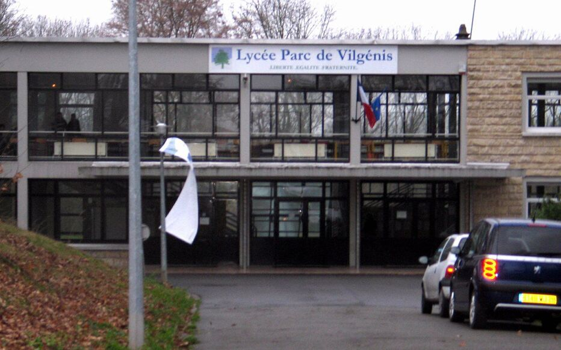

Le Lycée polyvalent Parc de Vilgénis est un lycée polyvalent public situé à Massy et faisant partie de l'académie de Versailles.
Le Lycée polyvalent Parc de Vilgénis se distingue notamment par l'enseignement des langues suivantes : arabe, italien, portugais.
Il propose la/les section(s) : Section européenne, Section Sport.
Il offre aussi la possibilité de suivre des spécialités peu proposées par d'autres établissements comme les spécialités numérique et sciences informatiques, sciences de l'ingénieur, langues, littératures et cultures étrangères et régionales.
